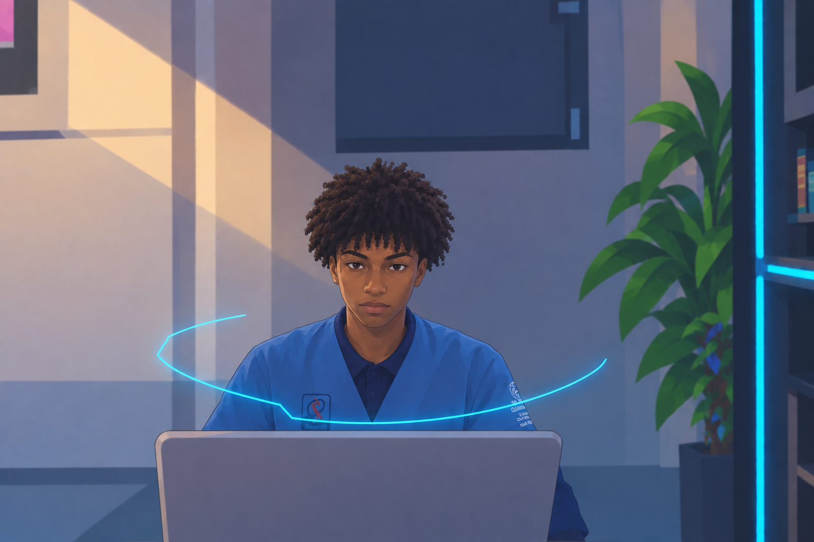

Sobre Mim
Sou estudante de Ensino Médio com interesse e formação complementar na área de Tecnologia da Informação, especialmente em Suporte de TI e Desenvolvimento Front-End. Possuo conhecimentos básicos em HTML e CSS, além de experiência com criação e estruturação de páginas web. Também venho desenvolvendo conhecimentos em Python, redes, manutenção de computadores, Pacote Office.
Busco aprimorar continuamente minhas habilidades técnicas e adquirir experiência profissional, com interesse em oportunidades que permitam aplicar meus conhecimentos, aprender novas tecnologias e evoluir na área de TI e desenvolvimento web.
